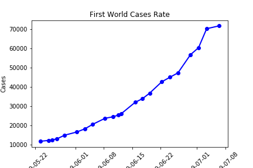
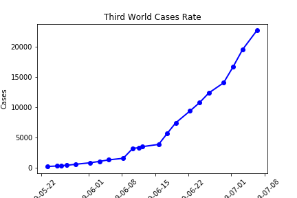
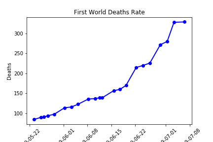
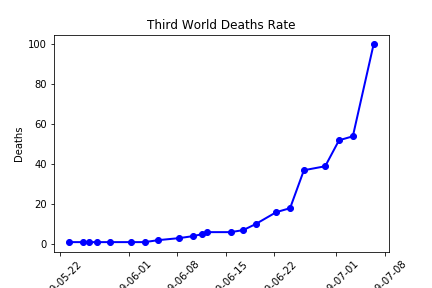

Do Third World countries have a higher risk of spreading diseases?
First world Countries:
Tend to have more stable governments & Higher average incomes
Third world Countries:
Tend to have no middle class, rather maintain a very wealthy high class with very impoverished people; Still developing

First World Countries Cases Rate
Hypothesis: Because of a lack of medical technology, funds, and unstable economies, third world countries will have a higher amount of cases for H1N1.

Third World Countries Cases Rate
The total amount of cases increase at about the same rate regardless of whether it is a first world or a third world country. Many people with flu don’t seek medical care and only a small number of those that do seek care are tested. Under-reporting of hospitalizations and deaths was very prevalent.

First World Countries Deaths Rate
Death rates seem to have similar findings, but third world did have a spike at the end of this period. There is some form of selection bias within epidemiology which occurs when authorities in different jurisdictions look at differing sets of patients. Estimating the true number of individual cases and deaths is very challenging

Third World Countries Deaths Rate
Conclusion: Surprisingly, the death rates of the first world countries are consistently higher than that of the third world countries. Countries with poor health care systems and poor laboratory facilities may take longer to identify suspected cases, analyse those cases and report them.